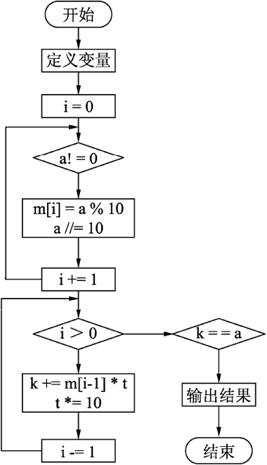

首页 > 编程笔记
Python求回文数（2种实现方案）
打印所有不超过 n（取 n<256）的其平方具有对称性质的数（也称回文数）。
此问题可借助数组来解决，将平方后的数值（a）的每一位进行分解，按从低位到高位的顺序依次暂存到数组中，再将数组中的元素按照下标从大到小的顺序重新将其组合成一个数 k（如 n=15，则a=225 且 k=522），若 a 等于 k 则可判定 n 为回文数。
利用这个方法要解决的一个问题是，什么情况下才算把所有数都拆分完了呢？当拆分到只剩原数最高位时（即新数为个位数时），再对 10 求商的话，得到的结果肯定为 0，可通过这个条件判断是否拆分完毕。
根据题意，应将每次拆分出来的数据存储到数组中，原数的最低位存到下标为0的位置，次低位存到下标为 1 的位置，以此类推。程序段如下：
编程实现输入一个 5 位数，判断它是不是回文数，例如 12321 是回文数，个位与万位相同，十位与千位相同。
完整的程序如下：
运行程序，输入 12521 ，判断它们是否为回文数，结果如下图所示。
问题分析
对于要判定的数 n，计算出其平方后（存于 a），按照“回文数”的定义要将最高位与最低位、次高位与次低位等进行比较，若彼此相等则为回文数。此算法需要知道平方数的位数，再一一将每一位分解并比较，此方法对于位数已知且位数不是太多的数来说比较适用。此问题可借助数组来解决，将平方后的数值（a）的每一位进行分解，按从低位到高位的顺序依次暂存到数组中，再将数组中的元素按照下标从大到小的顺序重新将其组合成一个数 k（如 n=15，则a=225 且 k=522），若 a 等于 k 则可判定 n 为回文数。
算法设计
从低位到高位将某个整数拆分。对于一个整数（设变量名为 a），无论其位数多少，若欲将最低位拆分则只需对 10 进行求模运算，即 a%10；拆分次低位首先要想办法将原来的次低位作为最低位来处理，用原数对 10 求商可得到由除最低位之外的数形成的新数，且新数的最低位是原数的次低位，根据拆分最低位的方法将次低位求出，即先进行 a//10 运算，后进行 a%10 运算；对于其他位上的数算法相同。利用这个方法要解决的一个问题是，什么情况下才算把所有数都拆分完了呢？当拆分到只剩原数最高位时（即新数为个位数时），再对 10 求商的话，得到的结果肯定为 0，可通过这个条件判断是否拆分完毕。
根据题意，应将每次拆分出来的数据存储到数组中，原数的最低位存到下标为0的位置，次低位存到下标为 1 的位置，以此类推。程序段如下：
i = 0
while a != 0: # 从低位到高位分解数a的每一位，存于数组m[1]~m[16]
m[i] = a % 10
a //= 10
i += 1
将数组中元素重新组合成一个新数。拆分时变量 a 的最高位仍然存储在数组中下标最大的位置，根据“回文数”定义，新数中数据的顺序与 a 中数据的顺序相反，所以我们按照下标从大到小的顺序分别取出数组中的元素组成新数 k。由几个数字组成一个新数时只需用每一个数字乘以所在位置对应的权值，然后相加即可，在编程过程中应该有一个变量 t 来存储每一位对应的权值，个位权值为 1，十位权值为 10，百位权值为 100，以此类推，所以可以利用循环，每循环一次，t 的值就扩大 10 倍。对应的程序段如下：
while i > 0:
k += m[i-1] * t # t记录某一位置对应的权值
t *= 10
i -= 1
确定程序框架
程序的流程图如下图所示：

第一种实现方案
if __name__ == '__main__':
m = [1] * 17
count = 0
print("No. number it's square(palindrome)")
for n in range(1, 256): # 穷举n的取值范围
k, i, t, a = 0, 0, 1, n*n # 计算n的平方
squ = a
while a != 0: # 从低到高分解数a的每一位存于数组m[1]~m[16]
m[i] = a % 10
a //= 10
i += 1
while i > 0:
k += m[i-1] * t # t记录某一位置对应的权值
t *= 10
i -= 1
if k == squ:
count += 1
print("%2d%10d%10d" % (count, n, n*n))
运行结果为：
No. number it's square(palindrome) 1 1 1 2 2 4 3 3 9 4 11 121 5 22 484 6 26 676 7 101 10201 8 111 12321 9 121 14641 10 202 40804 11 212 44944
第二种实现方案
在上面的问题分析中，提到另一种判断“回文数”的方法，就是将数据中每一位的数分离出来，然后比较对称位置上的数据，若相等，则此数是“回文数”。此方法适合于对一个整数进行判断。编程实现输入一个 5 位数，判断它是不是回文数，例如 12321 是回文数，个位与万位相同，十位与千位相同。
完整的程序如下：
if __name__ == '__main__':
x = int(input("请输入一个5位数整数："))
if x < 10000 or x > 99999:
print("输入错误")
else:
ten_thousand = x // 10000 #拆分最高位万位
thousand = x % 10000 // 1000 # 拆分千位
ten = x % 100 // 10 # 拆分十位
indiv = x % 10 # 拆分个位
if indiv == ten_thousand and ten == thousand:
print("%d是回文数" %x)
else:
print("%d不是回文数" %x)
对于本题来说，给定的是一个 5 位数，对于中间位置的百位不需要再进行分离，因为它不与任何其他位置进行比较。但对偶数位的整数进行判断时，所有位置都要分离出来。在编程过程中除了保证程序的正确性外，效率也是很重要的。运行程序，输入 12521 ，判断它们是否为回文数，结果如下图所示。
请输入一个5位数整数：12521
12521是回文数
关注公众号「站长严长生」，在手机上阅读所有教程，随时随地都能学习。内含一款搜索神器，免费下载全网书籍和视频。

微信扫码关注公众号